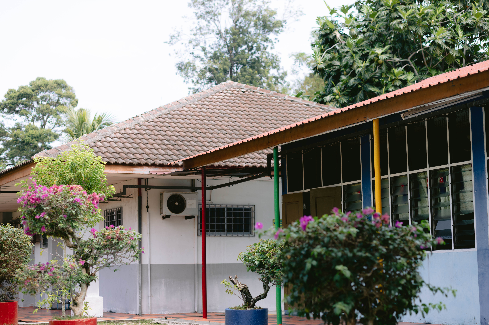

Profil sekolah
Sekolah Kebangsaan Minyak Beku
Sekolah Kebangsaan Minyak Beku ditubuhkan pada tahun 1909 di atas tanah wakaf En. Asrakal Bin Ismail, bermula di Bangunan Kelab Bola Sepak Melayu Kampung Teluk Buloh untuk 60 orang murid sebelum bangunan kayu baharu dibina secara gotong-royong pada tahun 1913. Seterusnya, Kerajaan Negeri Johor membina bangunan "rumah panggung" bertiang batu pada tahun 1918 bagi Sekolah Melayu Perempuan Minyak Beku, diikuti pembinaan bangunan serupa untuk Sekolah Melayu Laki-Laki Minyak Beku bersama rumah guru pada tahun 1932. Akhirnya, bangunan pasang siap tiga tingkat yang mengandungi enam bilik darjah, pejabat, perpustakaan, bilik tayang, dan kantin telah dibina pada 28 November 1984 dan diguna pakai sehingga kini.